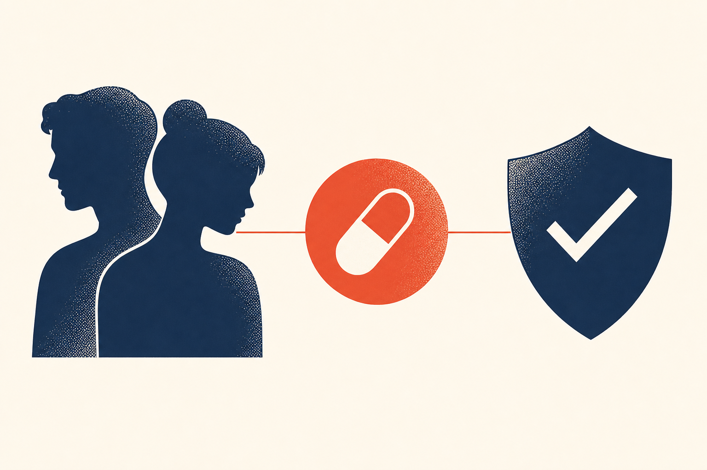

Key Takeaways
- Doxy PEP is a single 200 mg dose of doxycycline taken within 72 hours after condomless sex. It is event-driven, not a daily pill, and it does not prevent HIV.[1]
- Across three large randomized trials, doxy PEP reduced syphilis and chlamydia by more than 70 percent and gonorrhea by about 50 percent.[1]
- The CDC recommends doxy PEP for gay, bisexual, and other men who have sex with men and transgender women with at least one bacterial STI in the past 12 months.[1]
- It is not recommended for cisgender women or cisgender heterosexual men. The one large trial in cisgender women found no significant benefit.[5]
- The main trade-off is antimicrobial resistance. Tetracycline-resistant Staphylococcus aureus increased in the doxy PEP group in the DoxyPEP trial.[1]
- People using doxy PEP should be tested for STIs and HIV every 3 to 6 months and offered HIV PrEP if at risk.[1]

Doxy PEP is one of the most significant additions to sexually transmitted infection prevention in years, and it is also one of the most misunderstood. It is not a vaccine, not a daily pill, and not a substitute for condoms or HIV PrEP. It is a targeted, after-the-fact antibiotic dose for a specific group of people at high risk of bacterial STIs. This guide explains what it is, how well it works, who it is for, and the real trade-off that comes with it.
What Is Doxy PEP?
Doxy PEP is short for doxycycline post-exposure prophylaxis. It means taking a single 200 mg dose of doxycycline, a common tetracycline antibiotic, within 72 hours after condomless oral, vaginal, or anal sex to lower the chance of getting three bacterial sexually transmitted infections: syphilis, chlamydia, and gonorrhea.[1]
The word post-exposure is the key. Unlike HIV PrEP, which is taken daily or on a schedule before and after exposure, doxy PEP is taken only after sex that carries risk. If you do not have sex, you do not take it. This event-driven design is what makes it practical for people whose risk is intermittent.
How Doxycycline Prevents Bacterial STIs
Doxycycline is a tetracycline antibiotic that works by stopping bacteria from making the proteins they need to grow and multiply. When taken soon after exposure, it can kill the bacteria that cause syphilis (Treponema pallidum), chlamydia (Chlamydia trachomatis), and gonorrhea (Neisseria gonorrhoeae) before they establish an infection.[1]
The 72-hour window matters because of how these bacteria behave. After exposure, the bacteria need time to multiply to a level that causes disease. Hitting them early, before that happens, prevents infection from taking hold. This is the same logic behind post-exposure prophylaxis for other infections, including the antibiotics given after a tick bite to prevent Lyme disease.
The Evidence: What the Trials Found
Three large randomized controlled trials support doxy PEP. The results are consistent and substantial.
| Trial | Population | Syphilis | Chlamydia | Gonorrhea |
|---|---|---|---|---|
| DoxyPEP (NEJM 2023)[2] | MSM and transgender women, U.S. | 87% lower (PrEP group) | 88% lower (PrEP group) | 55% lower (PrEP group) |
| IPERGAY (Lancet ID 2018)[3] | MSM on HIV PrEP, France | 73% lower | 70% lower | No significant reduction |
| DOXYVAC (Lancet ID 2024)[4] | MSM on HIV PrEP, France | 79% lower | 89% lower | 51% lower |
The CDC summarizes the pooled evidence this way: 200 mg of doxycycline taken within 72 hours after sex reduces syphilis and chlamydia infections by more than 70 percent and gonococcal infections by approximately 50 percent.[1] The protection is strongest for syphilis and chlamydia and more modest, though still meaningful, for gonorrhea.
In the DoxyPEP trial, the number needed to treat was striking. It took treating about 5 people with doxy PEP to prevent one quarterly visit with a new STI.[2]
Who Should Consider Doxy PEP
The CDC recommendation is specific. Providers should counsel and offer doxy PEP to gay, bisexual, and other men who have sex with men and transgender women who have had at least one bacterial STI, specifically syphilis, chlamydia, or gonorrhea, during the past 12 months.[1]
This is a strong recommendation backed by high-quality evidence. The reason it is limited to this group is simple: these are the only populations in which doxy PEP has been proven effective in clinical trials.
Providers may also discuss doxy PEP with men who have sex with men and transgender women who have not had a recent bacterial STI but who plan to have sex that raises their risk of exposure. This group was not directly studied, so the conversation is more individualized.[1]
Who Doxy PEP Is Not Recommended For
The CDC gives no recommendation for cisgender women, cisgender heterosexual men, transgender men, or other queer and nonbinary people. The evidence is simply insufficient to assess the balance of benefits and harms in these groups.[1]
The reason is not theoretical. The one large trial in cisgender women, published in the New England Journal of Medicine in 2023, enrolled 449 cisgender women in Kenya and found no significant reduction in bacterial STIs overall (relative risk 0.88), no significant reduction in chlamydia, and no reduction in gonorrhea.[5] Syphilis could not be evaluated because too few infections occurred. This is a different result from the trials in men who have sex with men, and it is why the recommendation does not extend to women.
What's Changed: 2023 to 2026
Doxy PEP moved from research question to formal guideline in a short window.
- 2018: The IPERGAY substudy published the first strong evidence that doxycycline after sex reduced syphilis and chlamydia in men who have sex with men.[3]
- 2023: The DoxyPEP trial in the New England Journal of Medicine confirmed the effect in a U.S. population, and the cisgender women trial showed no benefit in women.[2][5]
- June 2024: The CDC issued its first formal clinical guidelines, recommending doxy PEP for men who have sex with men and transgender women with a recent bacterial STI.[1]
- 2024 to 2026: Implementation spread, and monitoring of antimicrobial resistance became a central focus.[6]
The key shift in practice is that doxy PEP is now offered as part of comprehensive sexual health care, alongside condoms, HIV PrEP, vaccination, and regular testing, rather than as a standalone measure.
How to Take Doxy PEP
The dose is 200 mg of doxycycline, taken once, as soon as possible after sex and no later than 72 hours after.[1] In practice this is usually two 100 mg tablets taken together.
How you take it matters for tolerability:
- Take it with a full glass of water and food to reduce nausea and stomach upset.
- Do not lie down for one hour after taking it. This reduces the risk of esophageal irritation and ulceration.
- Separate the dose by at least two hours from dairy products, antacids, and supplements containing calcium, iron, magnesium, or sodium bicarbonate, which can reduce absorption.
- Wear sunscreen or cover up, because doxycycline increases sensitivity to the sun.[1]
Dosing and Timing
| Element | Recommendation |
|---|---|
| Dose | 200 mg doxycycline, any formulation |
| Timing | As soon as possible, ideally within 24 hours, no later than 72 hours after sex |
| Maximum frequency | No more than 200 mg in any 24-hour period |
| Supply | Enough doses to last until the next follow-up, based on sexual frequency |
| Reassessment | Every 3 to 6 months |
Do not take more than 200 mg in 24 hours, even after multiple exposures in the same day. The ongoing need for doxy PEP should be reassessed every 3 to 6 months at a follow-up visit.[1]
Side Effects and How to Manage Them
Doxycycline is generally well tolerated, and most side effects are mild and resolve after stopping. The most common are nausea, upset stomach, esophageal irritation, and increased sensitivity to the sun.[1]
In the DoxyPEP trial, no serious adverse events were attributed to doxycycline, and only five participants stopped because of intolerance or preference.[2] In the IPERGAY substudy, gastrointestinal side effects occurred in 53 percent of the doxycycline group versus 41 percent of the comparison group.[3]
Two side effects deserve specific mention. Esophageal irritation and ulceration can occur if the pill is taken without enough water or while lying down, which is why the upright and full-glass instructions matter. And photosensitivity can cause an exaggerated sunburn, so sunscreen is important while using doxycycline.[8]
Antimicrobial Resistance: The Real Trade-Off
This is the central concern with doxy PEP, and it is why the recommendation is narrow rather than broad. Taking an antibiotic repeatedly, even intermittently, can select for bacteria that resist it.
In the DoxyPEP trial, tetracycline-resistant Staphylococcus aureus in the nose increased from 5 percent at baseline to 13 percent at 12 months in the doxy PEP group, while the standard-of-care group stayed flat.[1] Some gonorrhea isolates also showed increased tetracycline resistance. The CDC is actively monitoring for resistance in bacterial STIs and other common pathogens as doxy PEP use spreads.[1]
This is the honest trade-off. Doxy PEP meaningfully reduces syphilis, chlamydia, and gonorrhea in a high-risk population, but it carries an uncertain long-term cost in antimicrobial resistance. That is exactly why it is offered through shared decision-making to a targeted group, with regular reassessment, rather than prescribed broadly.[6]
Doxy PEP and HIV Prevention
Doxy PEP does not prevent HIV. It targets only bacterial STIs. This distinction is critical because the populations offered doxy PEP are often the same populations at risk for HIV.[1]
For that reason, doxy PEP should be offered alongside, not instead of, HIV prevention. People who are HIV negative and at risk should be offered HIV PrEP. People living with HIV should be linked to HIV care. Everyone using doxy PEP should be tested for STIs and HIV every 3 to 6 months.[1]
Doxy PEP Compared With Other Prevention
| Strategy | What it prevents | How it is used |
|---|---|---|
| Doxy PEP | Syphilis, chlamydia, gonorrhea (bacterial STIs) | 200 mg after sex, within 72 hours |
| Condoms | HIV, most STIs, pregnancy | Every sexual encounter |
| HIV PrEP | HIV only | Daily pill or on-demand schedule |
| Vaccines | Hepatitis A, hepatitis B, HPV, mpox | Vaccination series |
None of these replaces the others. Doxy PEP is an added layer for bacterial STIs in a specific high-risk group. Condoms remain the only method that also prevents HIV and pregnancy. HIV PrEP prevents HIV but not other STIs. Vaccines prevent specific viral infections. Comprehensive sexual health means using the right combination.[1]
Common Misconceptions
- "Doxy PEP is a morning-after pill for everything." It is not. It targets only three bacterial STIs and does not prevent HIV, herpes, HPV, or pregnancy.
- "I can stop using condoms." No. Condoms still prevent HIV and other STIs that doxy PEP does not.
- "It is for everyone." It is not. It is recommended only for men who have sex with men and transgender women with a recent bacterial STI, and it is not recommended for cisgender women or cisgender heterosexual men.[1]
- "It is a daily pill." It is not. It is taken only after sex that carries risk, no more than 200 mg per 24 hours.
- "It treats an STI I already have." It does not. Doxy PEP is prevention. If you have symptoms, you need testing and treatment.[7]
Red Flags: When to Contact a Clinician
- Symptoms of an STI: discharge, sores, burning with urination, rash, or pelvic pain. You may need testing and treatment, not just prevention.[7]
- Difficulty swallowing or chest pain after taking doxycycline. This can signal esophageal irritation or ulceration.
- A severe or blistering sunburn, which can indicate a photosensitivity reaction.
- Signs of an allergic reaction: hives, facial swelling, or trouble breathing. Seek emergency care.
- A possible pregnancy, since doxycycline is generally avoided during pregnancy.[8]
Frequently Asked Questions
Doxy PEP (doxycycline post-exposure prophylaxis) is taking a single 200 mg dose of the antibiotic doxycycline within 72 hours after condomless sex to lower the chance of getting syphilis, chlamydia, and gonorrhea.[1] It is an as-needed strategy, not a daily pill, and it does not prevent HIV.
The CDC recommends providers discuss doxy PEP with gay, bisexual, and other men who have sex with men and transgender women who have had at least one bacterial STI (syphilis, chlamydia, or gonorrhea) in the past 12 months.[1]
No. Doxy PEP only targets bacterial STIs (syphilis, chlamydia, and gonorrhea). It does not prevent HIV or other viral infections. People using doxy PEP should also be offered HIV PrEP if they are at risk for HIV.[1]
Take 200 mg of doxycycline as soon as possible after sex, ideally within 24 hours and no later than 72 hours. Do not take more than 200 mg in any 24-hour period.[1]
The dose is 200 mg, usually two 100 mg tablets taken together, once after sex. Take it with a full glass of water and food, stay upright for an hour, and separate it from dairy, antacids, and calcium, iron, or magnesium supplements by at least two hours.[1]
The most common side effects are nausea, upset stomach, esophageal irritation, and increased sensitivity to the sun.[1] Taking the dose with food and water, staying upright for an hour, and using sunscreen reduce these. Most side effects are mild and resolve after stopping.
It is a real concern. In the DoxyPEP trial, tetracycline-resistant Staphylococcus aureus in the nose rose from 5 percent to 13 percent in the doxy PEP group, and some gonorrhea isolates showed increased tetracycline resistance.[1] This is why doxy PEP is targeted to a specific high-risk population rather than offered broadly.[1]
No. Doxy PEP is event-driven, taken only after sex that carries risk, and no more than 200 mg per 24 hours. It is not a daily preventive medication.[1]
Yes. Doxy PEP does not replace condoms, which also prevent HIV and other STIs, and it does not replace HIV PrEP for people at risk of HIV. It is one added layer of protection, used alongside regular STI and HIV testing every 3 to 6 months.[1]
Doxy PEP is prevention, not treatment. If you have discharge, sores, burning with urination, or a rash, you may already have an infection and need testing and treatment, not just a preventive dose.[7] See a clinician.
References
- Bachmann LH, Barbee LA, Chan P, et al. CDC Clinical Guidelines on the Use of Doxycycline Postexposure Prophylaxis for Bacterial Sexually Transmitted Infection Prevention, United States, 2024. MMWR Recomm Rep. 2024;73(2):1-8. doi:10.15585/mmwr.rr7302a1
- Luetkemeyer AF, Donnell D, Dombrowski JC, et al. Postexposure Doxycycline to Prevent Bacterial Sexually Transmitted Infections. N Engl J Med. 2023;388(14):1296-1306. doi:10.1056/NEJMoa2211934
- Molina JM, Charreau I, Chidiac C, et al. Post-exposure prophylaxis with doxycycline to prevent sexually transmitted infections in men who have sex with men: an open-label randomised substudy of the ANRS IPERGAY trial. Lancet Infect Dis. 2018;18(3):308-317. doi:10.1016/S1473-3099(17)30725-9
- Molina JM, Bercot B, Assoumou L, et al. Doxycycline prophylaxis and meningococcal group B vaccine to prevent bacterial sexually transmitted infections in France (ANRS 174 DOXYVAC). Lancet Infect Dis. 2024;24(10):1093-1104. doi:10.1016/S1473-3099(24)00236-6
- Stewart J, Oware K, Donnell D, et al. Doxycycline Prophylaxis to Prevent Sexually Transmitted Infections in Women. N Engl J Med. 2023;389(25):2331-2340. doi:10.1056/NEJMoa2304007
- Centers for Disease Control and Prevention. Doxy PEP for Bacterial STI Prevention. cdc.gov/sti/hcp/doxy-pep
- Workowski KA, Bachmann LH, Chan PA, et al. Sexually Transmitted Infections Treatment Guidelines, 2021. MMWR Recomm Rep. 2021;70(4):1-187. doi:10.15585/mmwr.rr7004a1
- U.S. Food and Drug Administration. Doxycycline prescribing information. DailyMed, National Library of Medicine. dailymed.nlm.nih.gov